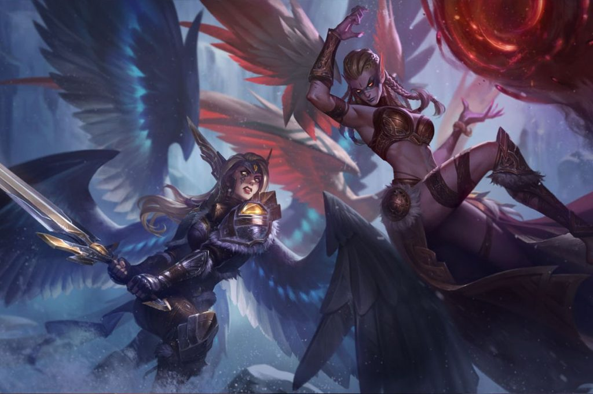
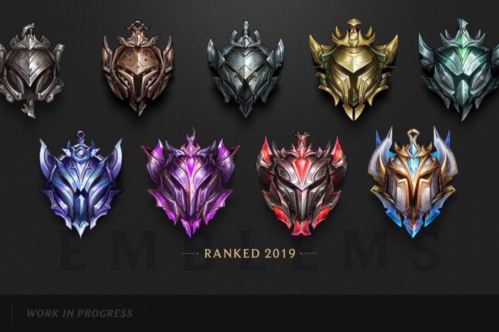
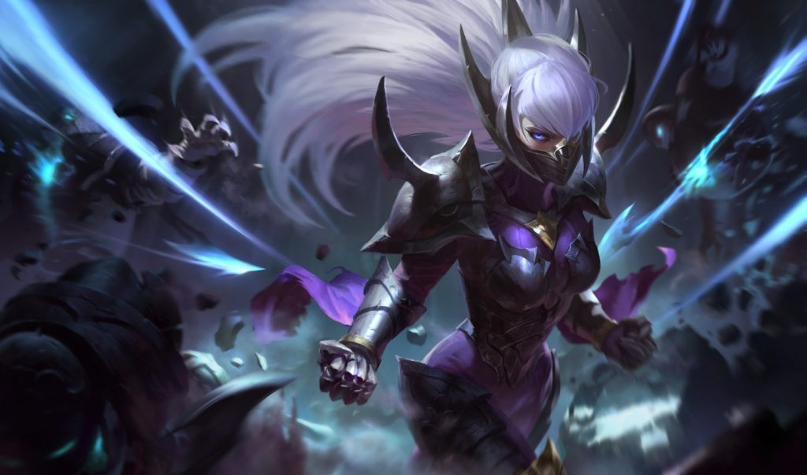

Agar memenuhi syarat untuk bermain Ranked Match di League of Legends, terdapat beberapa kriteria yang harus kamu penuhi. Pertama, kamu harus memiliki level 30 atau lebih tinggi. Kedua, kamu harus memiliki setidaknya 16 champion atau lebih.
Seberapa baik permainanmu dalam match penempatan akan menentukan dari mana tingkat kompetitif kamu akan dimulai. Jika kamu sering kalah, maka berkemungkinan besar kamu akan ditempatkan di Iron. Dengan memenangkan lebih banyak match akan membuatmu ditempatkan di tier yang lebih tinggi seperti Bronze dan Silver.
Terdapat sebanyak 9 tier yang bisa kamu capai di Ranked Match League of Legends dengan tier paling rendah adalah Iron, sementara Challenger adalah yang tertinggi.
Semua tier ini dibagi menjadi per divisi dengan IV (empat) sebagai divisi paling rendah dan I (satu) sebagai paling tinggi. Misalnya di tier Gold, kita akan melihat Gold I, Gold II, Gold III, dan Gold IV. Di sini, Gold I adalah divisi tertinggi di Gold, sementara Gold IV adalah yang terendah.
Berikut ini 9 tier yang bisa kamu capai di Ranked Match League of Legends:
Untuk naik dari satu tier ke tier yang lain, kamu membutuhkan League Points (LP) yang bisa didapatkan dengan memenangkan game di Ranked Match. Jumlah LP yang didapatkan di sini tergantung dari Matchmaking Rating atau MMR.
Jika kamu menang melawan pemain dengan MMR lebih tinggi daripada kamu maka kamu akan mendapatkan LP yang lebih banyak. LP yang lebih sedikit akan kamu dapatkan sewaktu kamu mengalahkan pemain dengan MMR di bawahmu.
Perlu diketahui, sewaktu kamu gagal memenangkan permainan, kamu akan kehilangan LP. Dan, ya, jumlah LP yang hilang itu juga ditentukan oleh MMR pemain yang menjadi lawanmu.
Pada saat kamu mencapai 100 LP di divisi I tier kamu, kamu akan diberikan kesempatan untuk naik ke tier selanjutnya. Akan tetapi, untuk bisa sampai ke sana, kamu harus memenangkan beberapa game sebagai bagian dari promosi kamu ke tier yang lebih tinggi.
Sewaktu akhir season, tier dan divisi kamu akan dikunci dan bakal menjadi rank tetap kamu di musim itu. Kamu akan mendapatkan sejumlah hadiah sesuai dengan rank yang berhasil dicapai. Kebetulan, Ranked Match musim ini (Season 9) sudah dijadwalkan akan berakhir pada 19 November mendatang tepat setelah Worlds 2019 selesai.
Ranked Match di League of Legends sebagai besar dihuni oleh pemain dengan tier Silver dan Gold. Hal ini seolah memperlihatkan betapa sulitnya ajang kompetitif di game ini. Kedua tier ini memiliki jumlah pemain sebesar 60 persen dari keseluruhan pemain yang bermain Ranked Match League of Legends.
Bisa kamu lihat pada gambar di atas, mulai dari Diamond dan seterusnya, terdapat penurunan besar dalam jumlah pemain di tier atas. Dengan hanya 0,02% pemain yang berhasil mencapai – dan yang paling penting, bertahan – di Challenger.
Jika menggunakan angka Riot Games sendiri yang mengatakan bahwa League of Legends dimainkan secara bersamaan oleh 8 juta pemain setiap harinya, kita dapat mengetahui bahwa hanya terdapat sekitar 1600 pemain di seluruh dunia yang cukup terampil untuk berada di tier teratas.
Perlu juga dicatat, bahwa sejak Platinum dan seterusnya, pemain kehilangan LP seiring waktu karena memiliki akun yang tidak aktif, sehingga untuk menjaga tier kamu, kamu harus terus bermain.
Agar bisa mencapai tier Platinum atau Diamond, kamu diharuskan untuk memiliki kemampuan bermain yang jauh lebih baik. Membiasakan diri untuk memainkan lebih banyak champion dan sering membaca patch notes untuk mengetahui perubahan meta, akan menjadi awal yang baik untuk meningkatkan kemampuan bermainmu di League of Legends.
Dan, setelah penempatan selesai dan kamu telah dipindahkan ke tier yang sesuai, ini berarti kamu sudah bisa memulai perjalananmu ke Challenger.